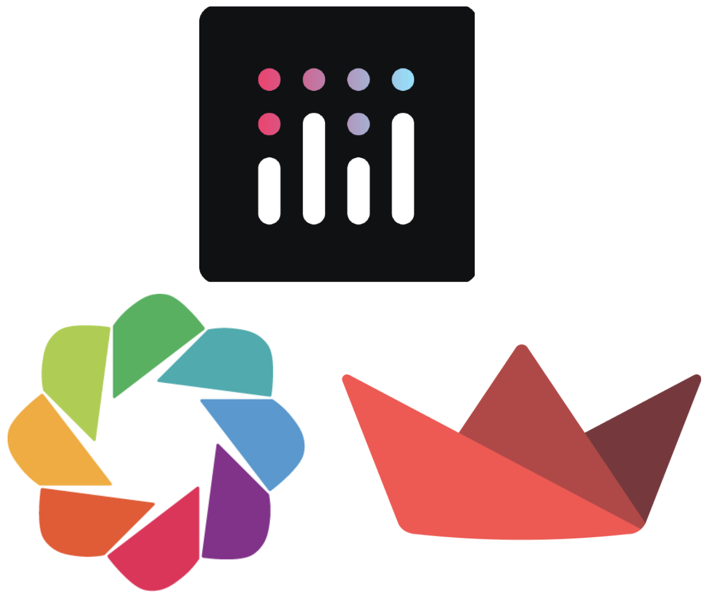
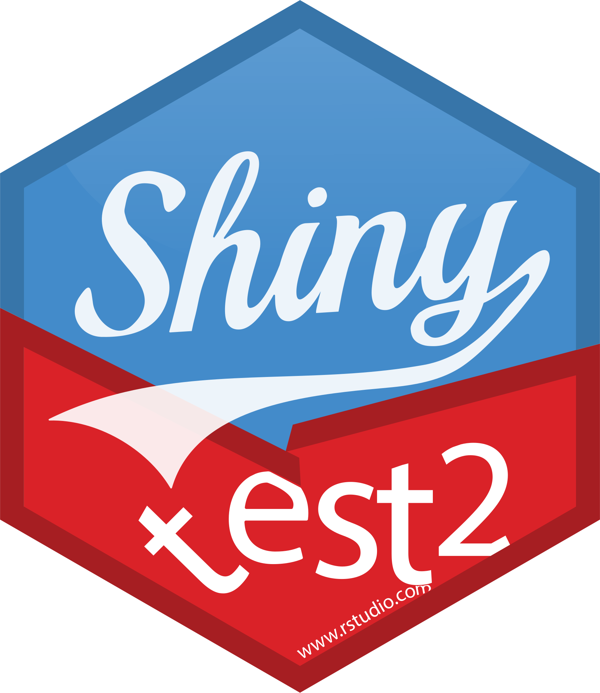
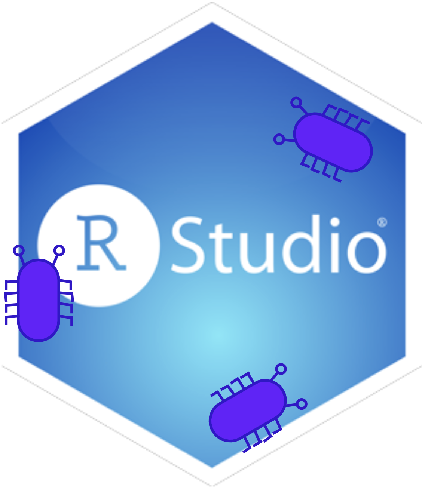
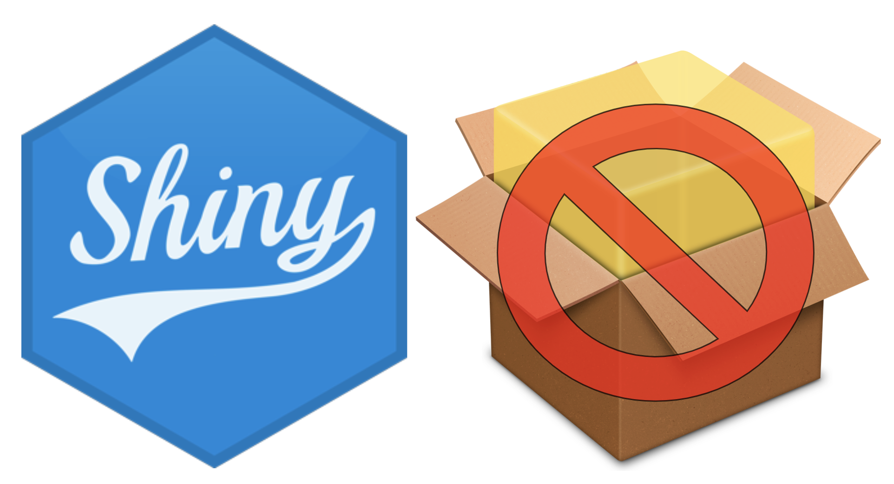
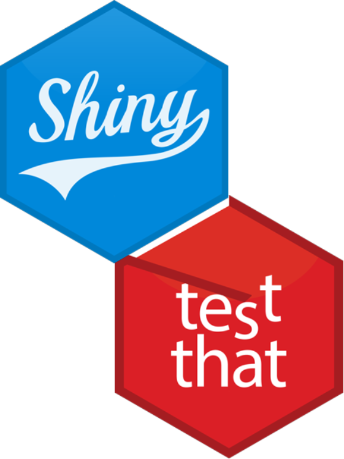

@mjfrigaard
About
All Posts
Books
Talks
Publications
Series
Code
Order By
Default
Title
Date - Oldest
Date - Newest
Shiny (for R) & APIs
I’ve been working my way through DevOps for Data Science by Alex K Gold (highly recommended) and the chapter on APIs includes exercises for using apps to communicate with…
Apr 23, 2025
Quarto Shiny Apps in R Packages
This post was prompted by a new chapter I’ve been working on for Shiny App-Packages. I’ve recently been building a Shiny application in a Quarto document
1
, and noticed quite…
Feb 6, 2025
Positron
I’ve been trying out Posit’s new Positron IDE for a few weeks, so I put together a post covering my initial impressions of developing Shiny apps and R packages.
Oct 14, 2024

Python Apps
This is the second post on working in VS Code with Python. I’ll cover developing and publishing Python applications using Bokeh, Streamlit, and Dash.
Jul 13, 2024
VS Code, meet Quarto.
I’ve been using VS Code to write more and more Python code lately, so I’ve decided make some notes on 1) installing Python, 2) working in VS Code, and 3) using Python code…
Jul 5, 2024

Shiny system tests with
shinytest2
This post has been shortened from the original version. I felt it was too long and duplicative of other resources written better elsewhere. If you’d like to read the…
Oct 15, 2023
Testing Shiny modules
This is the third post in a series on testing shiny applications. I’ll cover testing shiny module server functions using the
testhat
package and shiny’s
testServer()
function.
Oct 1, 2023

Debugging in RStudio
In this post I’ll cover using the
browser()
function with RStudio’s debugger. RStudio’s debugging tools are built into the IDE, which provides a seamless transition between…
Sep 1, 2023

Testing Non-Package Shiny Apps
This is the second post in a series on testing Shiny applications. I’ll cover testing Shiny module server functions using the
testhat
package
outside
of an R package…
Aug 20, 2023

Behavior Driven Unit Tests
This post is the first in a series on testing Shiny applications. We’ll cover developing and testing a set of utility functions for a Shiny app-package using
testhat
. If…
Aug 1, 2023
Writing modular code with
box
box
provides a precise and concise method for using add-on packages and functions.
box
also doesn’t require bundling your code into R packages to make it reusable. This post…
Jun 21, 2023
purrr updates (v1.0.0)
This post is going to cover the recent updates to the
purrr
package. The release of version 1.0.0 (and dev version v1.0.1) had some breaking changes, which I will cover…
Feb 5, 2023
No matching items